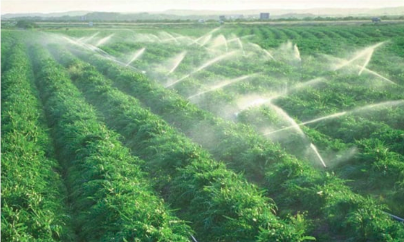
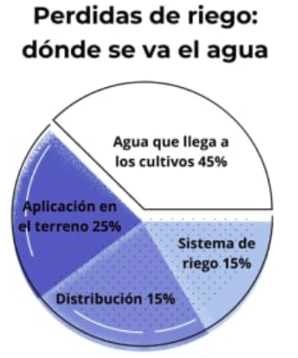
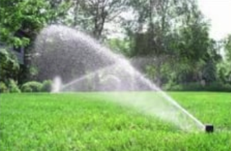

El usuario podrá monitorear y regar su planta de manera automatizada, en tiempo real desde nuestra página web que genera una base de datos.
Un riego mal manejado contribuye a la escasez de agua y a la contaminación, a la degradación de las tierras y a la difusión de enfermedades transmitidas por el agua.
Somos una empresa interesada en que nuestros usuarios dispongan de la mejor calidad en sus productos cultivados.
En la actualidad, ver por el cuidado del medio ambiente es parte fundamental, SQYA apuesta por ello, es por eso que nuestro sistema, siendo un regulador de la cantidad de agua que se incorpora a la planta, ayuda a el ahorro del agua, aunque a nivel individual no parezca tener impacto, cuando se visualiza en hectáreas de cultivo el efecto es formidable.
